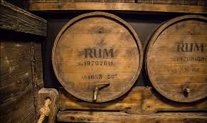
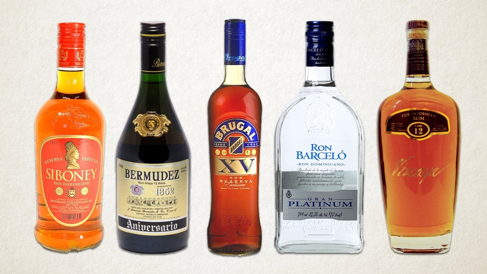

Как правильно пить ром.


Несмотря на то что ром давно известен ценителям крепких напитков, среди россиян свою популярность он приобрел сравнительно недавно. Приятно обжигающий горьковатый вкус рома нашел своих поклонников только в последние десятилетия.
Российские морозы располагают к употреблению горячительных «средств», ну а ром по праву считается верным другом замерзшего путника.
Ром считается одним из самых крепких алкогольных напитков.
Он наполнит ваше тело приятным теплом и энергией, подарит ощущение «невесомости» и позволит окунуться в состояние эйфории.
Разумеется, все хорошо в меру. Замечательные качества рома действуют гораздо лучше, если количество выпитого вами относительно невелико. Полная бутылка напитка богов отправит вас не в нирвану, а в нокаут. Конечно, есть на этом свете специалисты, способные оставаться в трезвом уме и здравой памяти, сколько бы они ни выпили. Мы смиренно снимаем шляпу перед этими асами и обращаем свою речь к простым смертным.
В прошлые столетия ром считался исключительно пиратским напитком. Пираты ввели моду на этот напиток. Они его пили не иначе как из бутылки. В то время такой способ употребления алкогольных напитков считался вполне нормальным и не вызывал никаких возражений.
В начале XX века в Европе представители среднего класса предпочитали пить ром аналогичным образом. В цивилизованном обществе мы вряд ли можем представить себе человека, который бы упивался ромом прямо из горлышка бутылки. Конечно же, желающие походить на бесстрашных покорителей водной стихии могут позволить себе такую вольность.
Однако большинству современных мужчин ближе традиционный способ употребления спиртных напитков — из рюмок. У тех, кто пьет ром в небольших количествах, больше преимуществ по сравнению с теми, кто действует по принципу: «Чем больше, тем лучше».
Во-первых, если вы предпочитаете цивилизованный способ употребления рома, у вас больше шансов не потерять над собой контроль (любая рюмка меньше, чем бутылка).
Во-вторых, вкус рома более приятен, если его пить маленькими порциями.
В-третьих, человек может пресытиться ромом, употребляя его в неимоверных количествах. Вы просто перестанете понимать, что вы пьете, ощущать прелесть этого напитка.
В отличие от мужчин, женщинам больше нравится ром со льдом. У него более мягкий и не такой терпкий вкус. Также дамы предпочитают употреблять ром не в чистом виде, а в составе пуншей и коктейлей. Хотя коктейли с ромом считаются крепкими, несмотря на то что истинный вкус рома в коктейлях теряется. Зато появляются новые разнообразные вкусовые оттенки.
Наибольшей популярностью пользуются аперитивы с использованием рома. Перед вечеринкой для улучшения аппетита и, соответственно, настроения хорошо подать аперитив. Ром придает ему терпкий, вяжущий, даже горьковатый вкус и пряный аромат. Аперитив подается в специальных рюмках. Объем порции не должен превышать 75 мл. Аперитив необходимо пить без соломинки, небольшими глоточками, наслаждаясь вкусом. Как правило, аперитив ничем не закусывается. 1 0Но иногда к нему подают оливки, дольки апельсина или лимона. Это не считается нарушением правил этикета.
Диджестивы — это разновидность коктейлей. Их принято пить, после того как вы поели. Они способствуют улучшению пищеварения. Диджестивы более разнообразны, по сравнению с аперитивами, поэтому у них есть своя собственная внутренняя классификация.
Как уже упоминалось, смэш — довольно крепкий коктейль. Его пьют в широком бокале или стакане, добавляя несколько кусочков льда. Объем порции не должен превышать 75 мл. Смэш пьют как самостоятельный напиток. Не рекомендуется употреблять более трех его порций. Этот коктейль считается чисто мужским напитком. Несмотря на это, некоторым женщинам смэш очень нравится. Стоит отметить, что при обсуждении проблем с деловым партнером смэш употреблять не стоит.
Коктейль сауэр можно пить в любых ситуациях. Рома в нем должно быть не более 50 мл. Его принято подавать в специальных рюмках-сауэр. Верхние края таких рюмок следует украшать «наледью» — край рюмки сначала смачивают в небольшом количестве фруктового сока, затем обмакивают в сахарный песок. Сауэр пьют без льда.
Многие любят слоистые коктейли за их оригинальный вкус и эффектный внешний вид. Их пьют на различных торжествах — как официальных, так и домашних. Слоистые коктейли предпочтительнее подавать в высоких узких рюмках. Соломинки к ним не предусмотрены. Их пьют небольшими глоточками, при этом не сильно наклоняя рюмку, чтобы слои не перемешались между собой.
Такие коктейли особо ценят любители утонченных спиртных напитков. В слоистых коктейлях происходит слияние различных вкусовых качеств, при этом не нарушается индивидуальность каждого напитка в отдельности. Они способны произвести впечатление даже на искушенного гурмана.
Существуют коктейли, которые одновременно представляют собой и выпивку, и закуску. Ойстер — именно такой коктейль. Это напиток с нерастекшимся яичным желтком. Его пьют одним глотком, поэтому рома в нем должно быть не больше 25 мл.
Взбитую смесь выливают в рюмку с широкими краями и в центр осторожно помещают желток. Все это сбрызгивают уксусом.
Естественно, напиток подают без льда. Ойстер пьют как самостоятельный напиток и без закуски.
Коктейли кордиал сложные по названию, но самые простые по составу. Для их приготовления ром смешивают с ликером и взбивают в шейкере. Кордиал подают либо в небольшой рюмке без льда, либо в широком бокале с толстым дном, но тогда уже со льдом.
В Англии в прошлые века был особо распространен горячий алкогольный напиток с пряностями под названием флип.
Последнее время флип все чаще готовят холодным. Коктейль взбивают в миксере или шейкере и подают в широком низком стакане. Сверху коктейль принято посыпать тертым мускатным орехом.
Ойстер и флип — коктейли со специфическим вкусом, и не всем они приходятся по душе. Эти напитки рассчитаны на гурманов и любителей оригинальной выпивки.
Мист — это скорее даже не коктейль, а особый способ подачи крепких спиртных напитков. Для того чтобы правильно подать мист, стакан необходимо наполнить измельченным льдом. Затем в стакан налить порцию рома в 50 мл и все тщательно перемешать. К напиткам мист можно также предложить лимон.
Ром-мист следует медленно пить небольшими глотками. Перед тем как сделать глоток, желательно содержимое стакана слегка перемешать легкими круговыми движениями. Со стороны эти движения не должны выглядеть так, словно вы хотите что-то смыть со стенок стакана.
Ром-мист можно предложить выпить деловому партнеру в кабинете. Он будет нелишним и во время разговора в комнате-библиотеке.
Еще в средние века люди начали готовить различные пунши. В нашем столетии этот напиток незаслуженно забыт. Только в последние годы пунш вновь начинает приобретать популярность.
Пунш можно пить как в горячем, так и в холодном виде.
Горячий ромовый пунш принято подавать в специальных широких металлических стаканах для пунша. Стаканы для напитка могут быть на небольшой тонкой ножке. Горячий пунш нельзя долго хранить в холодильнике и по необходимости разогревать. Его необходимо пить сразу же после приготовления. Такой пунш рекомендуется подавать на семейных застольях.
«Холодный пунш» сильно охлаждают в морозильной камере. Такой пунш подают в высоких фужерах и без льда. Этот напиток уместен на официальных торжествах.
Пунш с ромом и вином пьют из аналогичных фужеров. Пунш с ромом и взбитыми яичными белками принято подавать в высоких хрустальных фужерах или в очень изящных бокалах из тонкого стекла.
Все пунши подаются в конце застолья как самостоятельный напиток. Этикетом не предусмотрено под пунш употреблять какую-либо закуску.
Женщинам, которые предпочитают пить ром со льдом, можно посоветовать пить напиток в высоких фужерах в форме тюльпана на тонких коротких ножках. Подобный фужер наполняется не более чем на две трети и в него опускается несколько кусочков льда.
Ром можно употреблять не только с простым льдом. Особый неповторимый вкус напитку придает лимонный лед. Такой лед готовят из сока лимона, разбавленного водой из рассчета 1:1.
Настоящие знатоки рома считают, что его следует хранить в небольших серебряных флягах, а употреблять исключительно из серебряных рюмок-наперстков, рассчитанных на один глоток. Такой способ употребления рома считается сугубо мужской привилегией. Известно, что серебро является прекрасным антисептиком. Поэтому ром, хранящийся во фляжке из этого металла, обладает целебными свойствами. Если вы чувствуете себя разбитым, вялым, сделайте один-два глотка рома из серебряной фляжки. Это придаст вам сил и повысит жизненный тонус.
Согласно этикету, правила употребления рома могут меняться в зависимости от ситуации. Не всегда окружающая обстановка благоприятствует употреблению рома из собственной фляжки в рюмке-наперстке. Как ни любил бы человек смаковать спиртное из фляжки, но во время делового ужина, ланча, торжественного банкета это вряд ли будет уместно.
На официальном приеме или торжественном обеде (ужине) по какому-то важному случаю ром употребляют в небольших количествах. На таких мероприятиях ром предпочтительнее пить в маленьких рюмочках объемом не более 50 мл. Заполнять такие рюмки следует не более чем на две трети.
Ром необходимо пить небольшими глотками, даже если вы пьете его из элегантной серебряной фляжки или из горлышка бутылки. Пить залпом всю рюмку считается дурным тоном, да и вкус напитка вы навряд ли успеете почувствовать.
Рюмку надо несколько минут подержать в руке, чтобы напиток нагрелся. Очень важно, чтобы ром нагревался не искусственным путем, а от теплоты человеческой руки. Таким образом рому передается позитивная энергия. Перед тем как сделать глоток из рюмки, нужно насладиться ароматом рома. Вдыхать его следует постепенно, чтобы аромат медленно проникал внутрь организма. Аромат рома словно подготавливает человека к предстоящему глотку.
После того как вы насладитесь прекрасным крепким ароматом рома, его можно пить. Желательно глоток рома делать, одновременно вдыхая его аромат. Для этого необходимо ртом вдохнуть немного воздуха и аромата, а потом сделать небольшой глоток напитка. Глоток рома нужно несколько секунд подержать во рту и только после этого, сделав маленький глоток, проглотить.
Такой способ употребления рома на первый взгляд может показаться несколько утомительным, сложным. Но выпивая этот алкогольный напиток подобным образом, можно насладиться его качествами.
Этот алкогольный напиток можно подавать и самостоятельно, и в сочетании с легкой мясной холодной закуской.
На фуршетах ром пьют из таких же рюмок, как и во время торжественных обедов. Допустимо также пить его из широких бокалов (граненых или круглой формы) с толстым дном. Стенки таких бокалов не должны быть слишком толстыми, поскольку это затруднит процесс нагревания напитка. Такой бокал заполняется на одну треть. В бокал обычно кладется несколько кусочков льда.
На фуршетах допускается подавать ром как самостоятельный напиток и без закуски. Однако большинство людей предпочитает пить крепкий напиток под легкую нежирную мясную закуску.
Как правило, ром отлично сочетается с табачными изделиями. Поэтому его рекомендуют подавать с хорошими дорогими сигарами (сигаретами, табаком для трубки).
В последнее время деловые беседы проходят не только за чашечкой кофе, но и за бокалом какого-то спиртного напитка. В подобной ситуации спиртные напитки способствуют лучшему взаимопониманию. Фраза «Что будете пить?» в современном деловом мире звучит не как приглашение напиться и не выглядит как желание споить партнера и обманным способом достичь компромисса в делах.
В таких случаях ром будет как нельзя кстати. Его можно пить в широких бокалах с толстым дном, можно добавить немного льда. Употреблять его следует таким же способом, как и на торжественных обедах. При общении с деловым партнером не следует пить больше двух бокалов рома. Желательно ограничиться одним — это будет признаком хорошего тона. Этот напиток не должен отодвигать на задний план насущные проблемы, ради которых собрались бизнесмены. Ваш партнер оценит по достоинству ваше чувство меры.
Если бизнес-леди на деловом свидании предложат бокал рома, ей от него лучше отказаться. Выпить рюмку этого крепкого напитка могут только очень уверенные в себе, экстравагантные и эмансипированные деловые женщины, которых не интересует, что о них думают окружающие. В том случае, если дама не в силах отказаться от любимого алкогольного напитка, не стоит пить больше одной рюмки.
Ром в широких бокалах с толстым дном, но с тонкими стенками будет уместен во время полуофициальной встречи в кабинете, комнате-библиотеке, когда обсуждаются деловые вопросы. В такой обстановке напиток подается без закуски.
Но если посетитель вам не симпатичен, его не надо угощать ромом. Ром — это напиток дружбы. Его пьют люди, между которыми есть какое-то согласие, гармония или они заинтересованы в ее достижении.
На пикнике в кругу близких людей вы можете позволить себе расслабиться и пить ром так, как вам больше нравится. Но как это часто бывает, когда мы выезжаем на природу, мы не всегда продумываем, как и из чего будем пить те или иные напитки.
Столь удобная в походно-полевых условиях пластиковая одноразовая посуда для закусок незаменима, а вот для рома, к сожалению, не подходит. В пластиковых стаканах вкус напитка заметно ухудшается, теряет свой аромат.
Поэтому, собираясь на пикник, заранее продумайте, какие бокалы следует взять, если вы берете с собой бутылочку рома. Для различных пикников рекомендуется использовать широкие невысокие бокалы с толстым дном.
На различных семейных торжествах ром будет кстати. Его подают, как правило, под холодную мясную закуску. Закуску можно немного разнообразить фаршированными овощами, лимоном и оливками. Если праздник проходит в узком кругу самых близких родственников, ром можете подавать в невысоких бокалах, заполненных на одну треть.
В том случае, если вы решили, что торжество состоится в домашней обстановке, в этом случае ром следует разливать в маленькие рюмочки по 35–50 мл на тонких ножках. Рюмка не должна быть наполнена больше, чем на одну четверть.
Допустимо подавать ром в фужерах на очень высоких и тонких ножках со слегка изогнутыми краями. Фужер должен быть заполнен на одну треть. Как и в рюмках, так и в фужерах ром рекомендуется пить в чистом виде, то есть без льда. В таких тонкостенных стаканах ром наиболее эффективно нагревается в руках.
Кстати, человеку, который первый раз в жизни пробует ром, чтобы не испортить впечатление о напитке на всю последующую жизнь, настоятельно советуем пить ром из рюмки по всем правилам и только хорошего качества. Ром должен быть непременно хорошего качества. Только тогда вы получите удовольствие от напитка и по достоинству его оцените. Никогда не надо торопиться. Мнение о том, что удовольствие нужно растягивать, как нельзя лучше подходит к рому. Этим напитком необходимо наслаждаться, если вы не будете относиться к рому с почтением, он не раскроет вам всех своих достоинств.